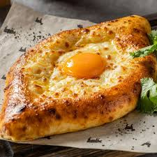

Кулінарні традиції
Так, у Західній Грузії широко розповсюджені хліб та особливі балабушки з кукурудзяного борошна — «мчаді», тоді, як у Східній Грузії віддають перевагу пшеничному хлібові.

Хачапурі являє собою хлібець різної форми з великим вмістом сиру: його в хачапурі приблизно вдвічі більше за вагою, ніж борошна.

на головну